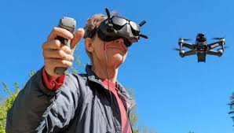
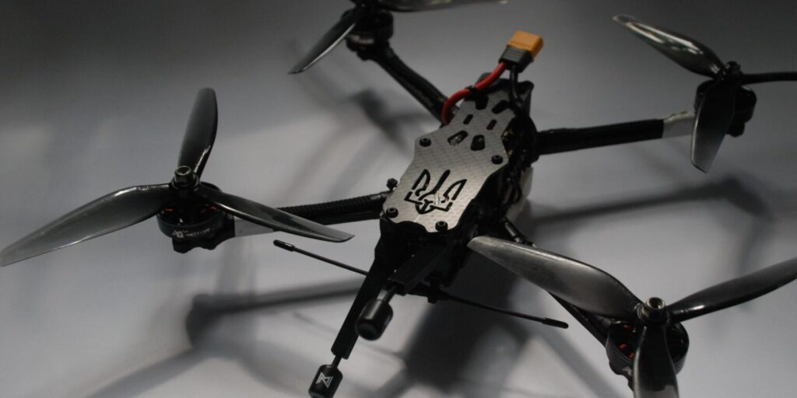

Чому варто обрати наш курс?
 FPV-дрон - це безпілотний літальний апарат з встановленою камерою, яка передає відеозображення в реальному часі на віддалений дисплей або окуляри, що надає відчуття присутності в кабіні дрона. FPV, або "First Person View", дозволяє оператору відчувати себе, ніби він сам знаходиться в кабіні дрона, що відкриває безліч можливостей у таких сферах, як фільмування, фотографія, гоночні змагання, моніторинг та дослідження. FPV-дрони дозволяють отримати унікальний погляд на світ з висоти пташиного польоту.
 Управління дронами має безліч користей у сучасному світі. Для дітей це відмінний спосіб розвивати творчість та навички програмування. Для відеооператорів - це нові можливості для зйомки захопливих кадрів з повітря. Для військових - це збільшення ефективності розвідки та безпеки. Усі ці групи отримують доступ до нових технологій, які розширюють їхні можливості і дозволяють досягати більшого успіху в своїх сферах діяльності.